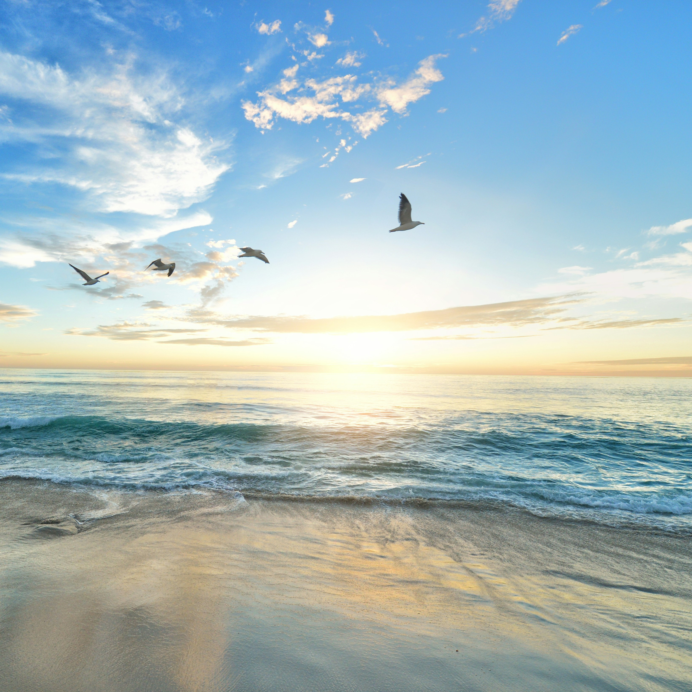
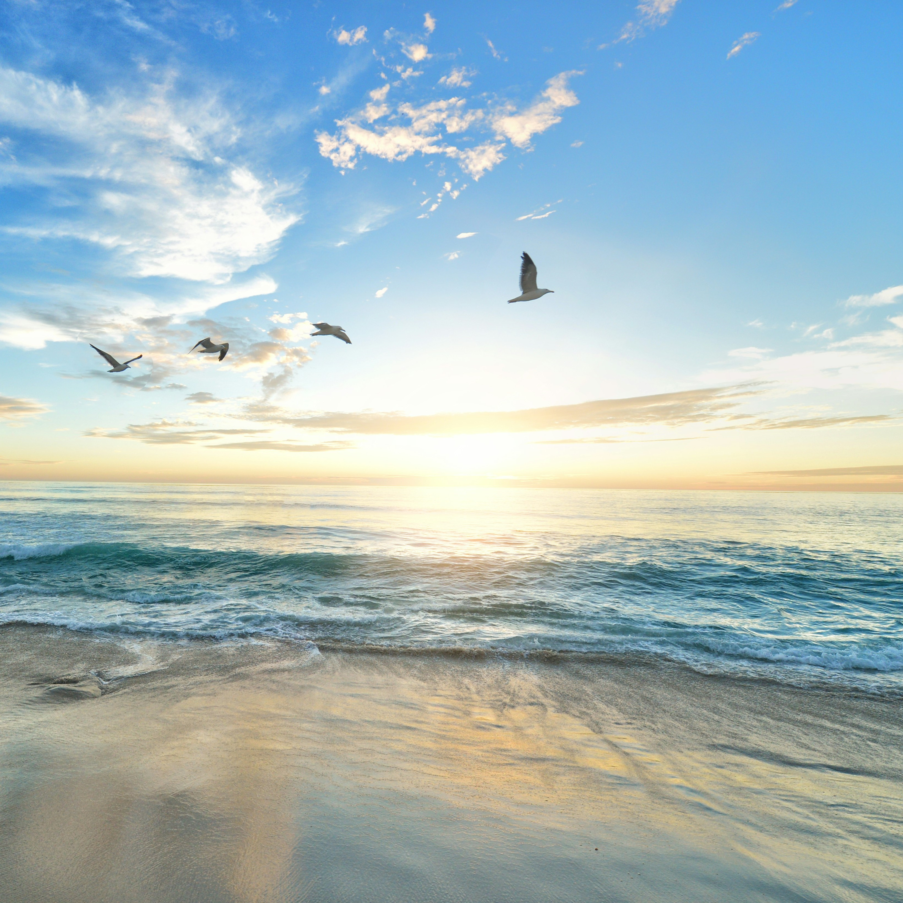

Welcome To
OCEANICA
menjaga ekosistem laut secara keberlangsungan demi menjaga keseimbangan bumi.

menjaga ekosistem laut secara keberlangsungan demi menjaga keseimbangan bumi.


Ratusan ribu ton sampah mencemari lautan tiap tahunnya. Sebagian besar sampah yang ada di lautan adalah sampah plastik. Sampah plastik yang terapung di laut atau mengendap di dasar laut dapat merusak lingkungan laut seperti terumbu karang, lamun, atau habitat lainnya. rusaknya lingkungan laut berdampak fatal bagi keseimbangan dan ekosistem laut

Selain merusak lingkungan, sampah plastik juga mengancam kehidupan satwa yang ada di laut. Satwa laut sering kali tersangkut atau menelan sampah plastik yang akhirnya bisa menyebabkan luka, infeksi, atau bahkan kematian. Hal ini sangat berdampak pada populasi satwa laut. Plastik juga bisa mengandung bahan kimia berbahaya yang dapat larut dalam air laut. Ketika satwa laut menelan plastik, bahan kimia tersebut bisa masuk ke dalam tubuh mereka, menyebabkan masalah kesehatan jangka panjang, termasuk kerusakan organ dan sistem kekebalan tubuh.

Sampah plastik di laut berdampak buruk bagi manusia karena dapat mencemari sumber air dan makanan laut yang kemudian dikonsumsi oleh manusia. Plastik juga dapat melepaskan zat kimia berbahaya yang dapat meracuni organisme laut dan akhirnya mencemari rantai makanan, termasuk manusia. Selain itu, plastik yang terurai menjadi mikroplastik juga dapat masuk ke dalam tubuh manusia melalui makanan dan minuman, dengan dampak kesehatan yang belum sepenuhnya dipahami.

Plastik dapat menyebabkan pencemaran air laut, merusak ekosistem terumbu karang, mengganggu hewan laut, seperti penyu, burung laut, dan mamalia laut yang dapat memakan atau terperangkap dalam plastik. Selain itu, plastik juga dapat mengganggu proses fotosintesis fitoplankton, yang merupakan dasar rantai makanan laut. Ketika plastik terurai menjadi mikroplastik, ia juga dapat mencemari habitat laut dan menjadi ancaman bagi keanekaragaman hayati laut.

Menumpuknya sampah plastik di laut tentu akan berdampak buruk pada kehidupan manusia kedepannya, oleh Karena itu kita harus merawatnya dengan baik.
 

Tiap tahun ada banyak sekali sampah yang berserkakan di laut hal ini membuat rusaknya lingkungan laut. Rusaknya lingkungan laut memiliki dampak negatif untuk ekosistem laut. Website ini hadi untuk memberikan edukasi kepada masyarakat tentang betapa pentingnya merawat lingkungan laut untuk menjaga ekosistem laut.